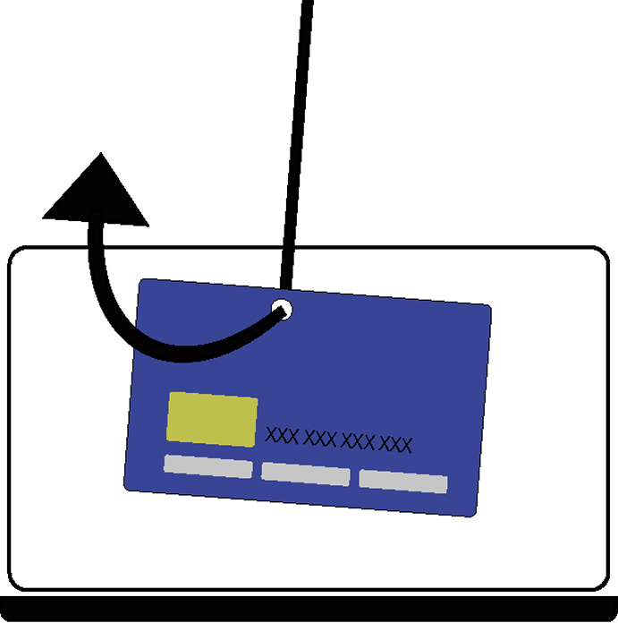

Branching scenario: Phishing

Phishing er en svindelmetode, hvor kriminelle forsøger at lokke personlige oplysninger fra dig via sms, mail og falske hjemmesider.
Er du klar til at lære hvordan du undgår phishing?
Det er fredag aften, klokken er mange og Ingeborg sidder og arbejder på et vigtigt projekt til skolen. Hun har valgt at blive hjemme denne fredag aften, da hun gerne vil blive færdig med projektet men derudover også spare de sidste penge hun har tilbage i måneden...

Pludselig popper en mail frem i højre hjørne af computeren, fra SKAT:
“Du har overskydende SKAT tilbage...”
Hun trykker instinktivt på mailen med det samme for at se hvad der mere står...
“Klik på dette link for at se beløbet og modtag dine penge.”
Hvad gør hun?